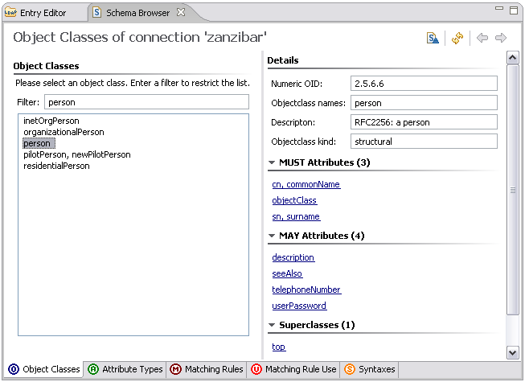
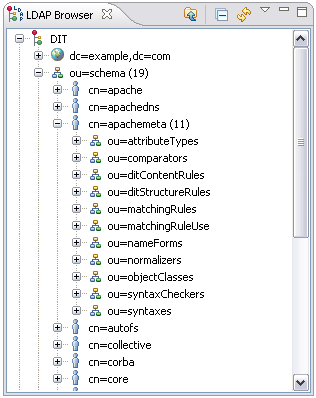
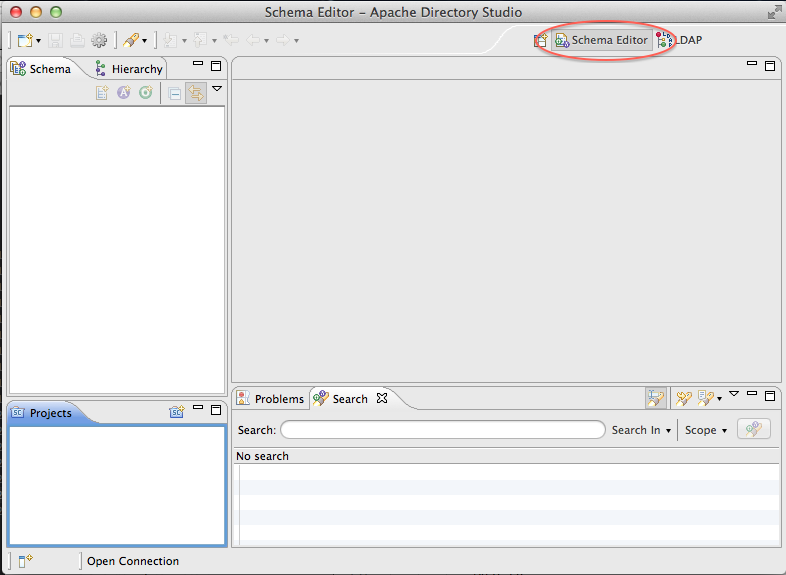
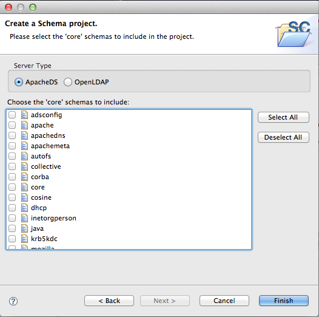
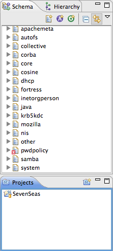
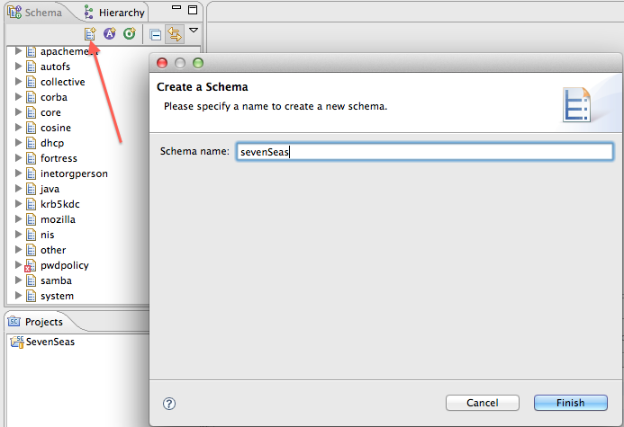
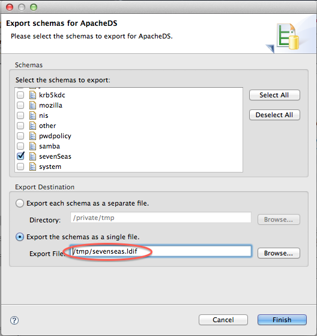
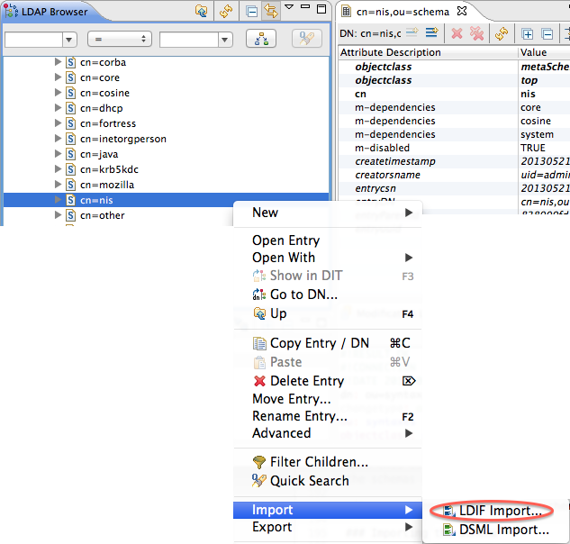

ApacheDS 2.0
Downloads
Documentation
- Basic User Guide
- Advanced User Guide
- Developer Guide
- Kerberos User Guide
- Configuration
- JavaDocs
- Cross-Reference
Support
Community
About Apache
2.3.2 - Enabling Schema
Motivation
In the following text the addition of user defined schema elements to the schema is described in tutorial style.
Browsing ApacheDS schemas
LDAPv3 servers publish their schema via LDAP. Thus it is possible to list the schema elements with standard LDAP tools. For instance it is possible to use the ldapsearch command line tool to list all object classes
$ ldapsearch -h zanzibar -p 10389 -D "uid=admin,ou=system" -w ****** \
-b "cn=schema" -s base "(objectclass=subschema)" objectclasses
...
objectClasses: ( 2.5.6.6 NAME 'person' DESC 'RFC2256: a person' SUP top
STRUCTURAL MUST ( sn $ cn ) MAY ( userPassword $ telephoneNumber $
seeAlso $ description ) X-SCHEMA 'core' )
...
The output (formatted as defines in RFC 4512) contains all things which are interesting to know about an object class (required attributes, optional attributes etc.), but is not easy to read by a human user. It is therefore often appropriate to use a GUI tool to browse the schema (which basically performs the same search operations but presents the output prettily). One option is Apache Directory Studio, an Eclipse based LDAP tool set which contains a powerful graphical Schema browser:

The techniques described above work for all LDAP v3 compliant servers. The ability to browse the schema gives us a chance to check whether our future changes to the schema really took place.
The schema subsystem of ApacheDS 1.5 stores the schema elements as entries in the DIT. You can find them within a special partition with suffix ou=schema; simply browse the content with your favorite LDAP Browser. With Apache Directory Studio, it looks like this:

Browsing the schema like this gives a good impression of the ApacheDS implementation of the schema subsystem and an even better way to analyze effects during schema updates. But keep in mind that the storage scheme is server dependent; not all LDAP server implementations store the schema elements in the DIT.
Which OIDs should you use?
If you plan to add custom schema elements, you need numerical OIDs (object identifiers) for them. If you implement schema elements defined somewhere else (like eduPerson), you can use the OIDs which are are part of their descriptions. But what if you plan to design your own?
Some OID background information
An OID is a string formed by a series of numbers which are separated by a dot (like “12.4.1971.0.1”). Many elements in directory world use OIDs: Controls, extended operations and schema elements (like “2.5.6.6” for object class person). They identify these objects in a unique fashion and therefore avoid name clashes.
How is this accomplished? OIDs are assigned hierarchically: The owner of an OID is allowed to create new IDs by simply appending numbers. S/he is also allowed to delegate ownership of newly created OIDs to someone else. This way every person or organization is able to allocate an arbitrary number of new OIDs after obtaining one from “higher command”, and they are still unique world-wide.
OIDs in the example
OIDs starting with 1.3.6.1.4.1 represent IANA-registered private enterprises, Apache Software Foundation for instance owns the OID 1.3.6.1.4.1.18060. The 1.3.6.1.4.1.18060.0 has been assigned to the Apache Directory project by the ASF, and we have decided to use the branch “1.3.6.1.4.1.18060.0.4.3” for schema elements used as examples in the documentation.
OIDs for your own custom schema elements
If you just want to play around with the schema subsystem, want to explore the capabilities, or learn about LDAP in general, you will probably not mind about unique OIDs. This is comparable to using self-signed certificates for SSL experiments. But it is nevertheless necessary that you use OIDs which are not used in the schema yet (otherwise addition will fail).
But if you plan to use your schema elements in a production environment (an object class for instance which describes employees with company specific attributes), or to ship your schema elements with a product (e.g. a CRM or portal solution), you should definitely use unique OIDs. In order to do this you have to obtain OIDs from a branch assigned to your company or organization (your network administrators will be helpful here, do not invent OIDs without asking or obtaining a branch from someone who owns the prefix OID). If your company or organization does not own on OID, there are several option to obtain one, one is the IANA (Internet Assigned Numbers Authority). It is also possible to get an OID branch as an individual.
A simple example
The goal is to store ship entries in our directory, backing the “Seven Seas” example used throughout the Basic User’s Guide. There are no schema elements shipped with ApacheDS covering our naval requirements. So we add some.
Here is a sample entry for a ship in LDIF:
dn: cn=HMS Victory,ou=ships,o=sevenSeas
objectClass: top
objectClass: ship
cn: HMS Victory
numberOfGuns: 104
description: a ship of the line of the Royal Navy
description: built between 1759 and 1765
A ship entry is comprised of a mandatory value for common name (cn) of the ship, description values and the number of guns (numberOfGuns). Thus a new object class ship and a new attribute type numberOfGuns have to be added to the schema. There are different ways to accomplish the task. In any case, we have to add the attribute type first, because the object class refers to it.
attribute type numberOfGuns
Here is the definition of our custom attribute type numberOfGuns formatted according to RFC 4512.
( 1.3.6.1.4.1.18060.0.4.3.2.1
NAME 'numberOfGuns' DESC 'Number of guns of a ship'
EQUALITY integerMatch SYNTAX 1.3.6.1.4.1.1466.115.121.1.27
SINGLE-VALUE
)
object class ship
Custom object class ship is defined as follows
( 1.3.6.1.4.1.18060.0.4.3.3.1
NAME 'ship' DESC 'An entry which represents a ship'
SUP top STRUCTURAL
MUST cn MAY ( numberOfGuns $ description )
)
Using Apache Directory Studio Schema Editor to load the new schema elements
A very convenient way to add your own schema elements to Apache Directory Server is to use the Schema Editor of Apache Directory Studio. It is even possible to define/design them within the UI, but we opt here use a prepared file in OpenLDAP format and import it using Studio. This is a good choice if you have the schema to add already described that way.
Our file sevenSeas.schema looks like this:
attributetype ( 1.3.6.1.4.1.18060.0.4.3.2.1
NAME 'numberOfGuns'
DESC 'Number of guns of a ship'
EQUALITY integerMatch
SYNTAX 1.3.6.1.4.1.1466.115.121.1.27
SINGLE-VALUE
)
objectclass ( 1.3.6.1.4.1.18060.0.4.3.3.1
NAME 'ship'
DESC 'An entry which represents a ship'
SUP top
STRUCTURAL
MUST cn
MAY ( numberOfGuns $ description )
)
In Eclipse with the Apache Directory Studio plugins installed (or alternatively the standalone RCP application of Apache Directory Studio, if you prefer this), open the Schemas Editor :

Now, create a new schema project. Here, you have a choice :
- either you create a offline schema project
- or you create a project that will pull the schema from an existing ApacheDS server (it must be running, and a connection must have been created in Studio)
Offline schema project
You need to create a new schema project, and to select the targeted server (either ApacheDS or OpenLDAP) :

Then select all the schema you want to use this is necessary if you are to extend an AttributeType or an ObjectClass in your own schema)
Connected schema project
In this case, you will see all the existing schema in the ApacheDS server you are connected to :

Creating the new schema
Create the new schema you want to add by clicking on the ‘schema creation’ icon, as shown in the following picture :

Now, you can add the Attribute Type or ObjectClasses you need in this added schema (see how to create schema elements in Apache Directory Studio documentation).
In order to inject the modified schema, you need to export the modifications in LDIF format for ApacheDS, and to import this LDIF into the targeted ApacheDS server.
Once this is done, you hav to export the modifications in a format that will fit what is expected by ApacheDS. Right click on the schemas windows, select ‘export-> Schemas for ApacheDS’, and in the popup, select the schema you have added :

Importing the schema
The last step is to import the newly created LDIF into your ApacheDS instance. Just import it as any other LDIF, it will create a new element in your server schema : 
You should see your schema into the list of supported schemas.